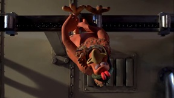
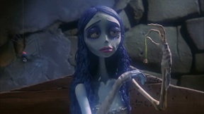
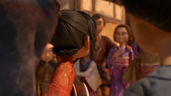
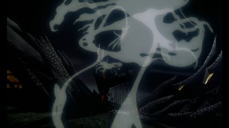
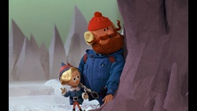

Chicken Run (2000) | Breaking The Pie Machine Scene |

Corpse Bride (2005) | Tears to Shed |

Kubo and the Two Strings (2016) | Origami Storytime |

The Nightmare Before Christmas (1993) | The Citizens of Halloween |

Rudolph the Red-Nosed Reindeer (1964) | Reindeer Rescue |

Wallace & Gromit: A Grand Day Out (1989) | Landing on the Moon |